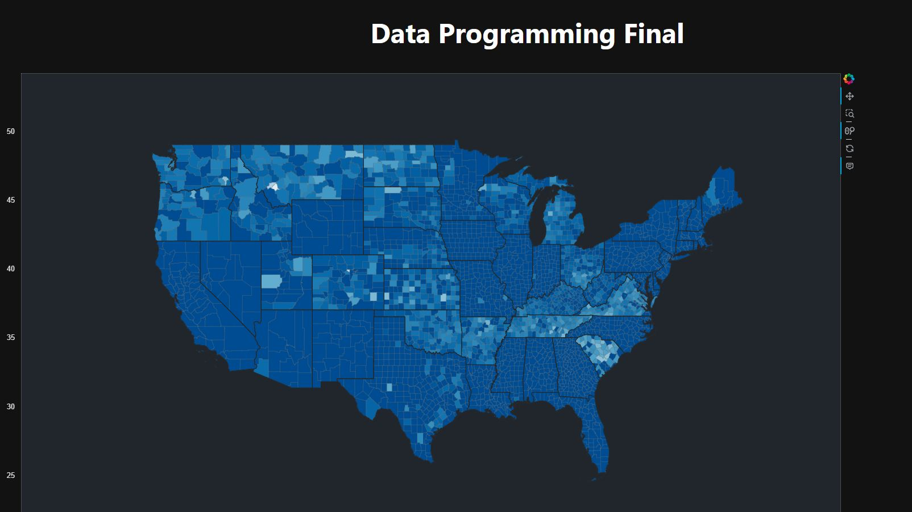
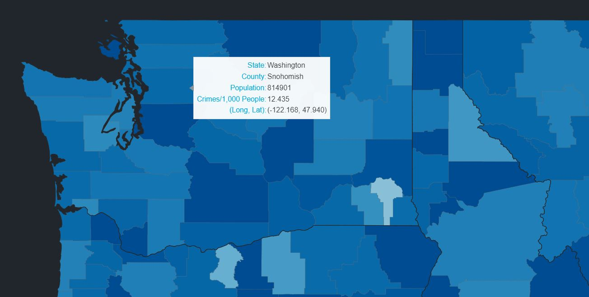
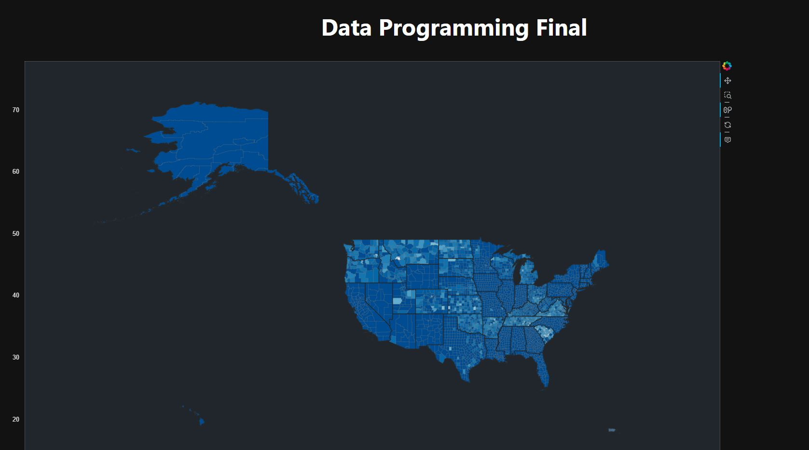

Mapping the Intersection: Unveiling Insights in Crime Rates and Population Density
In a comprehensive data science endeavor from December 2022 to May 2023, I embarked on a probing analysis delving into the complex interplay between crime rates and population density across the United States. Employing Python as the cornerstone of this exploration, I adeptly utilized various Python libraries to meticulously clean, sort, and merge extensive datasets, crafting a robust foundation for comprehensive analysis. A pivotal aspect of this project was the development of an interactive map, a testament to my adeptness in data analysis and visualization tools, offering an insightful representation of the relationship between these intricate variables.
Throughout this project, adaptability was key. I continually adjusted my goals to circumvent dataset constraints, ensuring the integrity of the analysis. Rigorous validation against existing research was a critical step, corroborating and refining the findings, enhancing the accuracy and reliability of the results. Finally, armed with these meticulously gathered insights, I presented my findings, showcasing a depth of understanding and an ability to articulate complex data-driven narratives. The interactive map served as a visual testament to my proficiency, available for exploration at https://hazenhackclub.github.io/data-programming-final/. This project stands as a testament to my skills in data analysis, visualization, and the capacity to tackle multifaceted real-world challenges through innovative data-driven approaches.